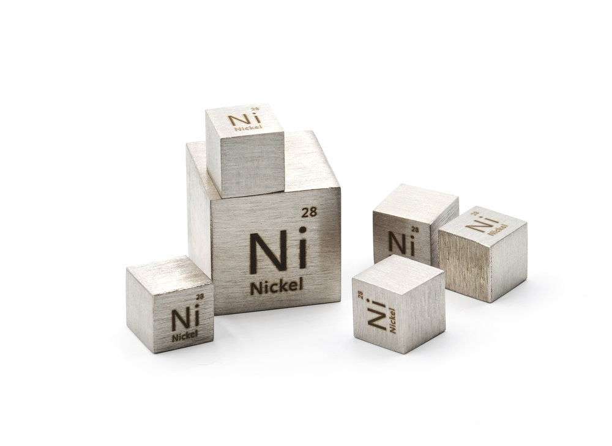
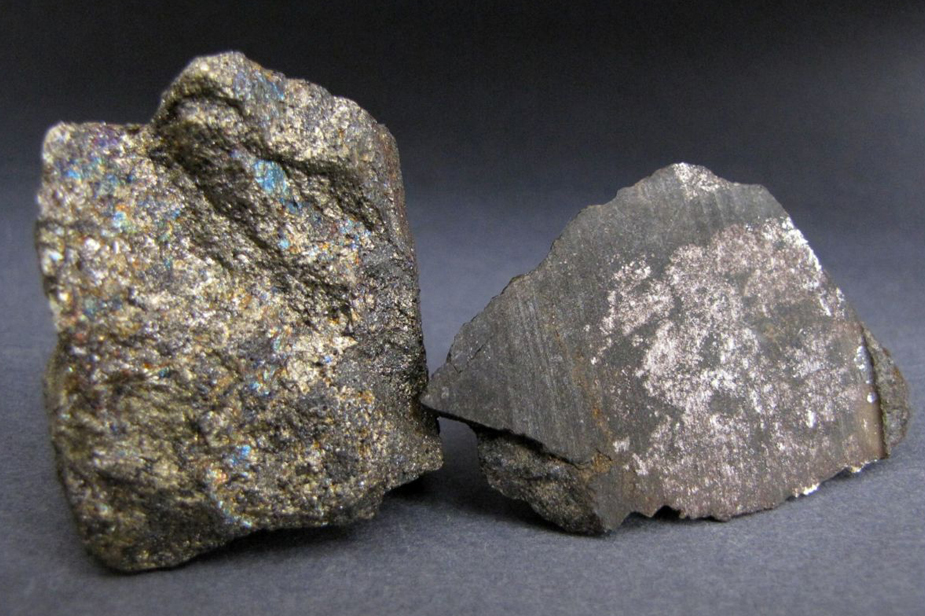

Никель
Ни́кель (химический символ — Ni, от лат. Niccolum) — химический элемент 10-й группы (по устаревшей классификации — побочной подгруппы восьмой группы, VIIIB), четвёртого периода периодической системы химических элементов Д. И. Менделеева, с атомным номером 28. Простое вещество никель — это пластичный, ковкий, переходный металл серебристо-белого цвета. При обычных температурах на воздухе покрывается тонкой плёнкой оксида. Химически малоактивен.

Никельсодержащие сплавы были известны в Китае более 2000 лет назад. Элемент открыт (выделен в форме простого вещества) в 1751 г. А. Кронстедтом. Название происходит от минерала купферникеля (NiAs, никелин), известного уже в 17 в. и часто вводившего в заблуждение горняков внешним сходством с медными рудами (нем. Kupfer – медь, Nickel – горный дух, якобы подсовывавший горнякам вместо руды пустую породу).
Визуально элемент выглядит как металл с типичным серебристым блеском. Присутствует небольшой желтоватый оттенок. Обладает хорошей пластичностью и ковкостью. Это мощный природный ферромагнетик, который легко притягивается к металлу. В природе никель имеет обширное распространение. Доля в земной коре составляет 0,01%. Совместно с сульфидами и мышьяком, кремнием принимает участие в образовании некоторых солей. В некоторых метеоритах его концентрация варьируется в диапазоне 5-25%. По последним данным у Никеля присутствует 5 изотопов естественного происхождения. Также представлен целый ряд искусственного синтезированных.
Значительную часть металлического никеля производят из сульфидных руд. Первичные сульфидные руды никеля содержат в заметных количествах также Co, Cu, Ag, Au и платиновые металлы, поэтому их переработка проводится с извлечением всех необходимых компонентов. На первых стадиях переработки – окислительном обжиге концентрата – отделяется бо́льшая часть сульфида Fe (основной компонент первичных руд). Полученный оксидный концентрат переводят в раствор аммиака в присутствии кислорода и CO2. Раствор отделяют от CoO сульфидом аммония. Заключительной стадией очистки является электрохимическое рафинирование. Кроме Ni, Co и Cu, из анодных шламов можно выделить Ag, Au и платиновые металлы. Объём мирового производства никеля достигает 1 млн т/год (2013).

Бо́льшую часть производимого никеля используют как компонент легированных сталей и для получения сплавов, обладающих высокой механической прочностью, коррозионной стойкостью, жаропрочностью, жаростойкостью, магнитными и другими особыми физическими свойствами. Металлический никель применяют для создания покрытий на поверхности других металлов, как конструкционный материал для химической аппаратуры и ядерных реакторов, для изготовления аккумуляторных электродов, как катализатор.